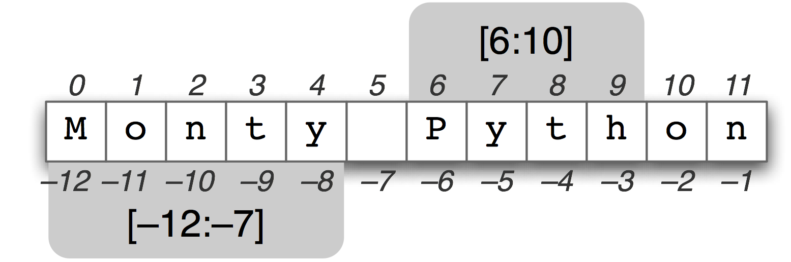

Python
Introduction to Python Programming Language
Created by Dwij IT Solutions / Ganesh Bhosale

Hello There
Python is a widely used general-purpose, high-level programming language that lets you work more quickly and integrate your systems more effectively.
Its design philosophy emphasises code readability, and its syntax allows programmers to express concepts in fewer lines of code
History of Python
Python was conceived in the late 1980’s and its implementation was started in December 1989 by Guido van Rossum in the Netherlands.

Features of Python Language
- Very clear, readable syntax
- Object orientation
- Natural expression of procedural code
- Full modularity, supporting hierarchical packages
- Exception-based error handling
- Very high level dynamic data types
- Extensive standard libraries and third party modules for virtually every task
- Extensions and modules easily written in C, C++, Java
Core Philosophy
- Beautiful is better than ugly
- Explicit is better than implicit
- Simple is better than complex
- Complex is better than complicated
- Readability counts
Python facts !!!
- Open Source
- Easy to Learn & excel.
- No need of compilation of code.
- Error handling in runtime.
- Take very less time for up & running.
- Object Oriented Programming + Procedural + Functional
- Pre-installed with Linux, Unix & Mac OSX
Up & running with Python
Python Installation on Ubuntu
By default python comes pre-installed in Ubuntu distribution. Check simply by command:
python --versionPython Installation on Windows
- Donwload Python Installer from https://www.python.org/downloads/windows.
- Or use direct Donwload link for python-2.7.5
-
If python get installed in C:\python27 directory, use command to set path:
set path=%path%;C:\python27 - You will see Python (command line) in Windows Menu.
- Make sure it runs and opens Python Shell Window
Python Installation on Macintosh
The latest version of Mac OS X, Yosemite, comes with Python 2.7 out of the box. Check simply by command:
python --versionIf not you can install it from https://www.python.org/downloads/mac-osx
Python Interpreter
Simply by putting command python in terminal you can start python interpretor for Ubuntu/Mac. For windows open Python (command line) from Windows Menu.
The interpreter’s line-editing features include interactive editing, history substitution and code completion on systems that support readline.
The interpreter operates somewhat like the Unix shell: when called with standard input connected to a tty device, it reads and executes commands interactively.
Using Interpreter
Press to get command history.
When commands are read from a tty, the interpreter is said to be in interactive mode. In this mode it prompts for the next command with the secondary prompt which has three dots representation (...), instead of (>>>) which is primary prompt.
To exit interpreter:
Use Ctrl+D in Linux & Mac
Use Ctrl+Z and then Enter in Windows
Using Interpreter
>>>(7+2)*10
90
>>>print “Hello World”
Hello World
>>>i=90
>>>i
90
>>>print i*(i+10)
9000Running Python Files (.py)
- Off course you are not going to write all your python codes on interpreter.
- We use extension .py for saving python files.
- Command to execute python file:
python SimpleProgram.pySimpleProgram.py
x = 34 - 23 # Acomment.
y = "Hello" # Another one.
z = 3.45
if z == 3.45 or y == "Hello":
x = x + 1
y = y + "World" # String concat.
print x
print yBasics of Python
Python Identifiers
- A Python identifier is a name used to identify a variable, function, class, module or other object.
- An identifier starts with a letter A to Z or a to z or an underscore (_) followed by zero or more letters, underscores and digits (0 to 9)
- Characters not allowed: @, $ and % & other symbols
- Python is a case sensitive. Thus, Manpower and manpower are two different identifiers.
Coding Style
- No braces {} for block of code. We use indentation instead.
- Indentation with similar number of spaces / tabs.
if True:
print "Answer"
print "True"
else:
print "Answer"
print "False" # This line will give ErrorPython 2 or 3 ?
- For beginners there is no real difference.
- Python 2.x is legacy, Python 3.x is the present and future of the language
- Python 3.0 was released in 2008. The final 2.x version 2.7 release came out in mid-2010, with a statement of extended support for this end-of-life release.
- The 2.x branch will see no new major releases after that. 3.x is under active development and has already seen over five years of stable releases, including version 3.3 in 2012 and 3.4 in 2014.
Data
Objects
Object id
>>> a = 4
>>> id(a)
140542751073952
>>> a = "Hello"
>>> id(a)
4370401824
Type
>>> a = 4
>>> type(a)
<type 'int'>
>>> a = "Hello"
>>> type(a)
<type 'str'>
Value
>>> a = 4
>>> a
4
>>> print a
4
>>> a = "Hello"
>>> a
'Hello'
Two Types of Objects
Mutable (Changable)
- When you alter the item, the id is still the same.
e.g. Dictionary, List
>>> b = []
>>> id(b)
140675605442000 # Object ID
>>> b.append(3)
>>> b
[3]
>>> id(b)
140675605442000 # Object ID SAME !
Immutable
- When you alter the item, the id changes.
e.g. String, Integer, Tuple
>>> a = 4
>>> id(a)
6406896
>>> a = a + 1
>>> id(a)
6406872 # DIFFERENT!
Variables
a = 4 # Integer
b = 5.6 # Float
c = "hello" # String
a = "4" # rebound to String
Naming Conventions for variables
- lowercase
- underscore_between_words
- don't start with numbers
- See PEP on http://legacy.python.org/dev/peps/pep-0008
PEP
- Python Enhancement Proposal
- Similar to JSR(Java Specification Requests) in Java
- The formal documents that describe proposed specifications and technologies for adding to the platform.
- In short Standardization
Maths & Variables
Basic Operations
Maths
>>> print round(3.14159265, 2) # round number for 2 decimal places
3.14
>>> abs(-45) # absolute value of number
45
>>> 11 // 2 # floor division
5
>>> int(34.67) # parse float to int
34
>>> int("89") # parse string to int
89
>>> float(89) # parse int to float
89.0
>>> long(67829) # parse to long
67829L
Maths Module
>>> import math # Import Math Module
>>> math.sqrt(10) # Find Square root of 10
3.1622776601683795
>>> math.factorial(5) # Factorial of 5
120
>>> math.log10(20) # Return the base-10 logarithm of 20
1.3010299956639813
>>> math.sin(4) # Return the sine of 4 radians
-0.7568024953079282
>>> math.pi # The mathematical constant π
3.141592653589793
- Check more on https://docs.python.org.
Order of Operations
| Order | Syntax | Operation |
|---|---|---|
| 1 | ( ... ) | Parentheses |
| 2 | ** | Exponents |
| 3 | * / % // | Multiplication and Division |
| 4 | + - | Addition and Subtraction |
Careful with integer division
>>> 3/4
0
>>> 3/4. # Either number should be float
0.75
>>> 3./4
0.75
Long
>>> import sys
>>> sys.maxint # Value differs from PC to PC
9223372036854775807
>>> sys.maxint + 1
9223372036854775808L # Long variable
New way of defining variables
a, b = 0, 1is same as
a = 0
b = 1
Booleans
a = True
b = False
if False:
print "Its true" # This will not get printed
if a:
print a # Prints True
None
c = None
String Manipulation
String Definations
- Either by double ( " ) or single ( ' ) quotes.
- You can insert single quote ( ' ) within string created by double quotes ( " ) & vice versa.
- Multiline string need three time single ( ''' ) or double quotes ( """ ).
>>> name = 'matt'
>>> with_double_quote = "I ain't gonna"
>>> longer = """This string has
... multiple lines
... in it"""
How to print complex Strings
Using String Escaping
>>> print 'He said, "I\'m sorry"'
He said, "I'm sorry"
>>> print '''He said, "I'm sorry"'''
He said, "I'm sorry"
>>> print """He said, "I'm sorry\""""
He said, "I'm sorry"
String Escaping
| Escape Sequence | Output |
|---|---|
| \\ | Backslash |
| \' | Single Quote |
| \" | Double quote |
| \b | ASCII Backspace |
| \n | Newline |
| \t | Tab |
| \u12af | Unicode 16 bit |
| \U12af89bc | Unicode 32 bit |
| \o84 | Octal character |
| \xFF | Hex character |
String formatting
c-like
>>> "%s %s" %('hello', 'world')
'hello world'
PEP 3101 style
>>> "{0} {1}".format('hello', 'world')
'hello world'
>>> print "Hello" , " " , "World"
Hello World
Global Variable
- Need to define global in order to use inside functions.
# declare global variable
n = 0
def setup():
global n
n = 100